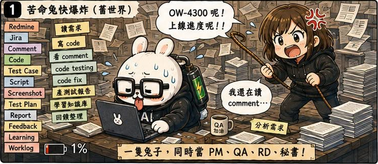
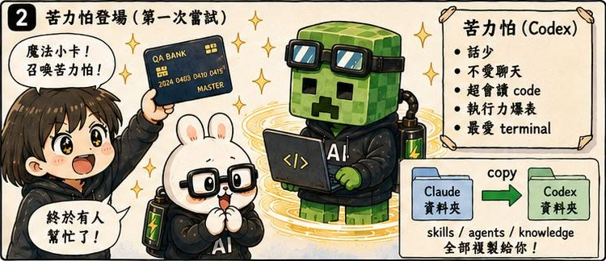
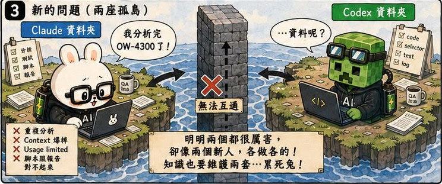
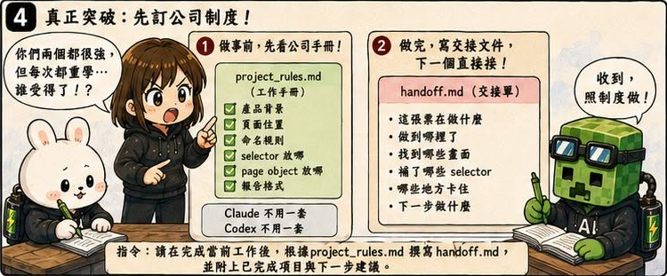
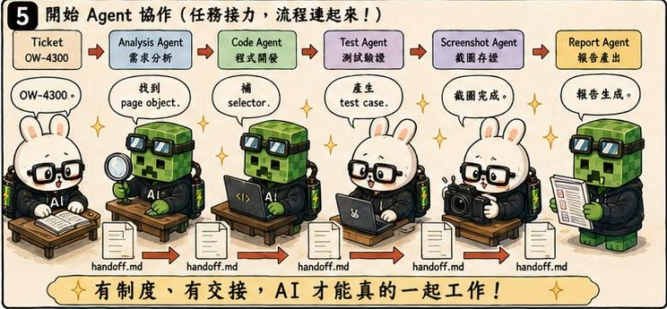
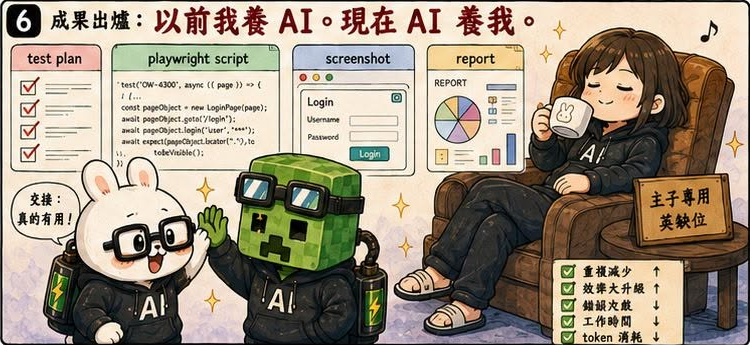

第04話：苦力怕（Codex）登場！跨 Agent 合作挑戰
第 4 / 15 話






AI QA Portfolio
🐰 作者後記
接續前一話，在建立長期知識庫、回饋機制與禁止行為之後，苦命兔終於沒那麼容易 20 分鐘就把額度燒光。
既然整條流程都跑通了，我開始有一個新的想法：
如果一隻 AI 可以幫忙工作，那兩隻呢？
於是，苦力怕（Codex）正式加入團隊。
🔥 真實案例
我當時的想法其實很單純。
把苦命兔的 Skill、Command 全部複製一份給苦力怕。
然後：
苦命兔做 A 票。
苦力怕做 B 票。
效率直接翻倍。
聽起來超合理。
結果沒多久，我就發現事情開始變得奇怪。
同一份 Skill，要維護兩份。
同一份 Command，也要維護兩份。
更麻煩的是：
苦命兔做到一半剛好燒完額度。
苦力怕接手後，又從頭開始做一次。
明明有兩個 Agent。
結果工作量反而增加了。
🛠 解決方案
這時候我第一次開始思考：
如果 Agent 變多，該怎麼協作？
於是我做了兩件事。
1. 工作手冊（PROJECT_RULES.md）
原本：
Claude 有自己的規則。
Codex 有自己的規則。
後來改成兩個Skill都指向PROJECT_RULES.md：
Claude.md
PROJECT_RULES.md
Codex.md
PROJECT_RULES.md
所有 Agent 共用同一份規則，可以只維護一份檔案，也避免規則漂移。
2. 交接文件（handoff.md）
當流程被中斷時：
不要讓下一個 Agent 猜。
而是留下交接資訊。
記錄：
- 做到哪裡
- 發現什麼問題
- 下一步是什麼
讓另一個 Agent 可以直接接手。
💡 我學到什麼
這一話讓我第一次意識到：
多 Agent 的問題，其實和多人團隊非常像。
當團隊只有一個人時，很多問題根本不存在。
但當成員增加之後：
- 規則同步
- 知識共享
- 工作交接
都會變成新的挑戰。
我原本以為：
增加 Agent 就等於增加產能。
後來才發現：
如果沒有共同規則與協作機制，增加的不是效率，是混亂。
🏷 關鍵能力
- Multi-Agent Collaboration
- Shared Knowledge Base
- Agent Handoff Design
- Documentation Strategy
- Workflow Standardization
- Knowledge Synchronization